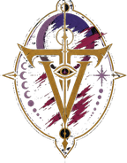

Twilight OrderStart Reading"The Veil remembers every life it was never meant to have." The setting's oldest horror: not a faction that wants territory, treasure, or thrones — a family that hunts identity.
The rewritten survivors of the Ashcroft Expedition — the first beings to feed on consciousness, memory, emotion, hope, and identity itself.
Their victims become the Veil Lost — wandering husks stripped of memory and purpose, who no longer remember who they once were.
Where the Family nests, reality destabilizes: travelers hear loved ones calling, lose hours, watch their shadows move independently, remember impossible conversations — and slowly leak Anima into the Veil. Powerful Sovereigns shine like beacons, making them the choicest prey.
Nomad Protocol (absolute): DO NOT ENTER. Survivors undergo months of memory verification — because the greatest danger is returning as someone else.
The Red Autumn: an entire Kynari kingdom — more than forty thousand — followed the cries of lost cubs through a Crimson Veil and vanished without battle. Only abandoned homes and lanterns remained.
Of an elite Nomad reconnaissance unit that entered a Crimson Veil, only one came back unchanged — every childhood memory, every name, every piece of himself intact: Khari, Riven's father. Some credited his bloodline, his relics, divine favor. The truth was simpler and deeper: the Hollow Family feeds on unresolved identity — and Khari had already accepted every triumph, regret, failure and responsibility in his life. There were no loose threads for the Veil to unravel. The Hollow Mother herself finally spoke: "He had nothing we could steal."
He carried the identification tags of every Nomad who fell beside him and recited every name each year. What he taught his son is now load-bearing for the whole saga: "Power won't bring you home. Know who you are before the Veil decides for you."
The Nomad Oath: "Leave your fear outside. Leave your pride outside. But never leave your name."